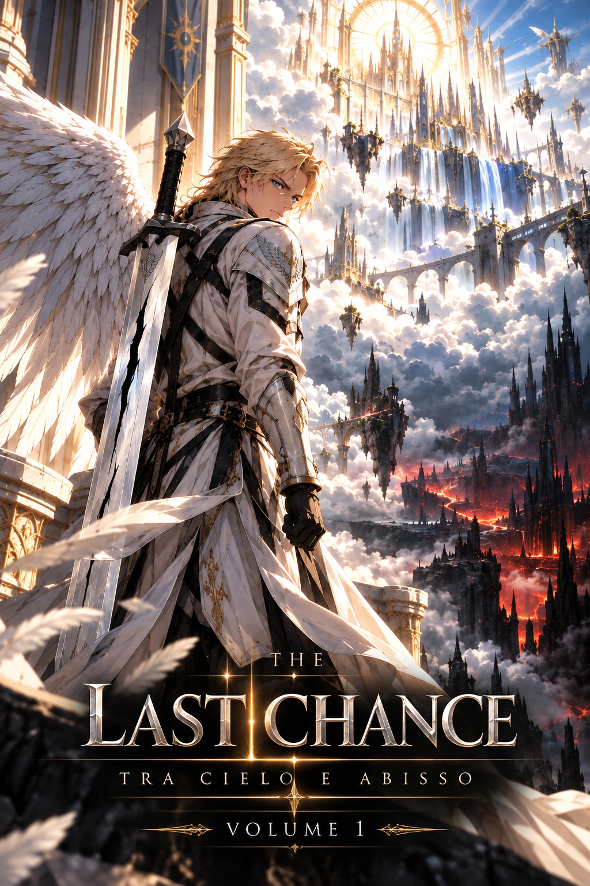

Volume I
INDICE
CAPITOLO I
Il mondo che rimane
CAPITOLO II
Il Grande Concilio
CAPITOLO III
La Scelta del Padre
CAPITOLO IV
La Cicatrice Nera
CAPITOLO V
Il Peso dell’Ignoto
CAPITOLO VI
Sotto la Pelle del Dio
Tocca un capitolo per iniziare
‹
1 / 2
›